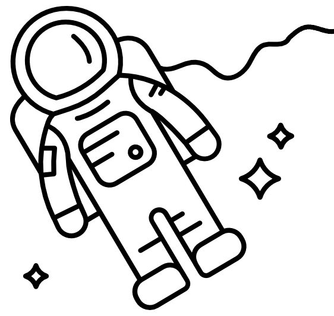

Теория симулятора орбит и орбитальных движений
Главная страница
О проекте
Ссылки на источники картинок для сайта
2024 год
Проект для МГТУ им. Баумана
Симулятор орбит и орбитальных движений
Orbitalika

Источники картинок
Все картинки взяты из открытых источников
- Портрет К. Э. Циалковского (страница «О проекте»)
- Значок планеты для смены языка в будущем (шапка сайта)
- Картинка планеты (страница «Симулятор»)
- Картинка космонавта (страница «Симулятор» и «Источники картинок»)
- Картинка с элементами орбиты (страница «Теория»)